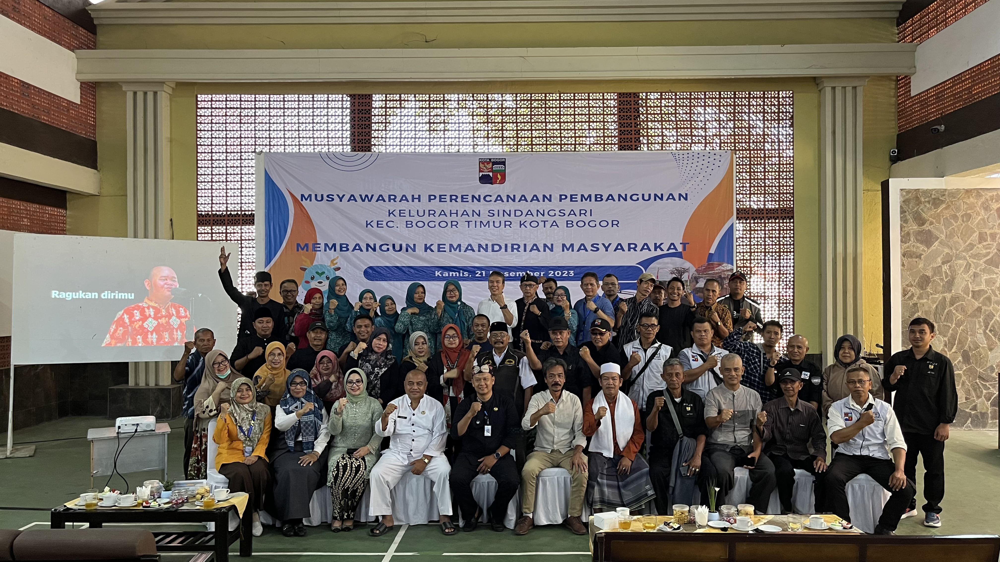
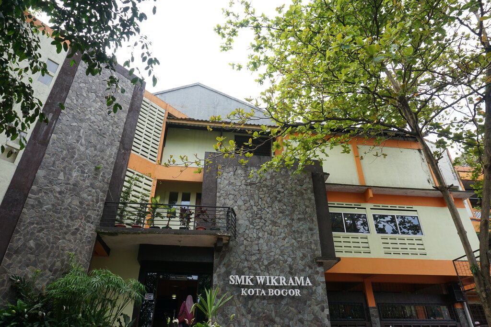
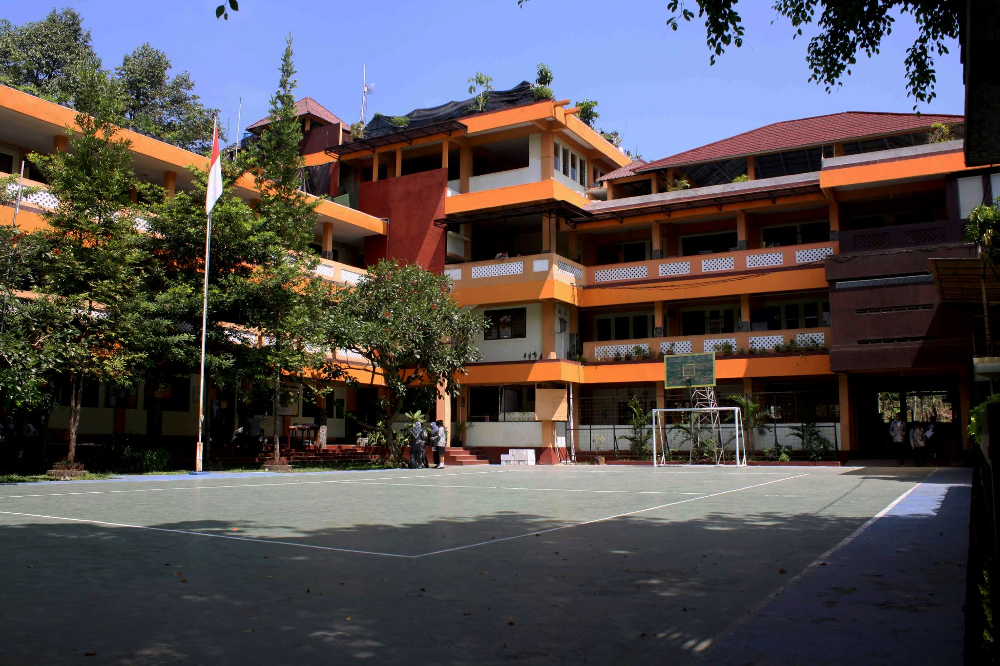
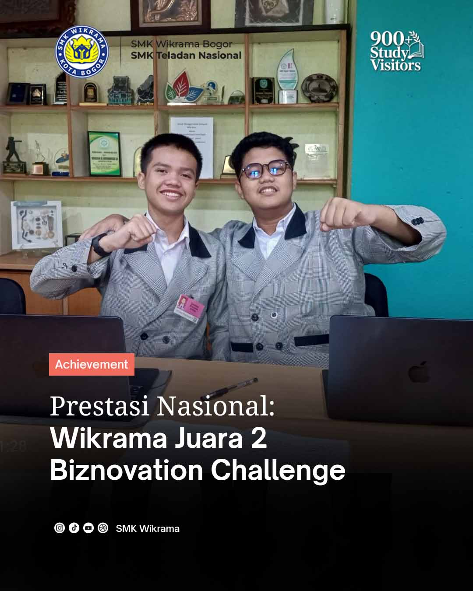
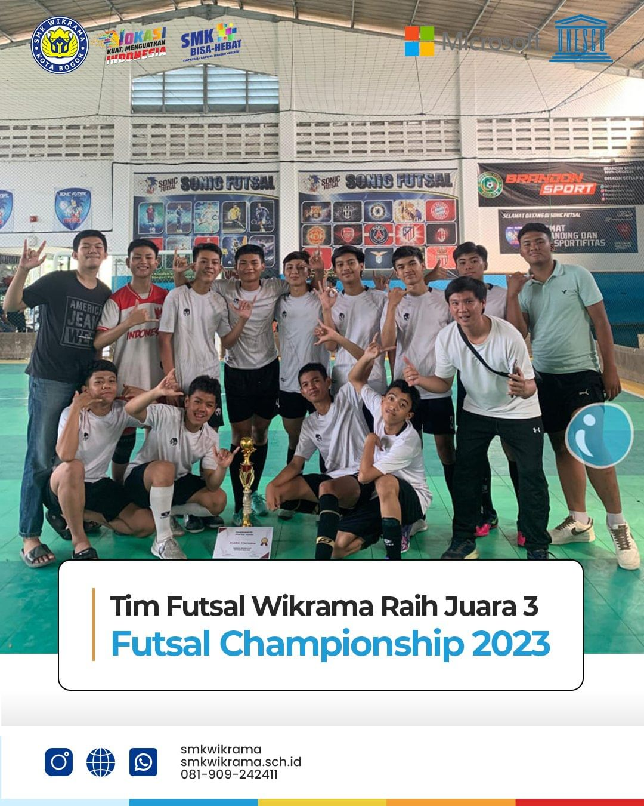

Profil

Sejarah SMK Wikrama Bogor


SMK Wikrama Bogor didirikan oleh Ir. Itasia Dina Sulvianti dan Dr.H.RP Agus Lelana dibawah naungan Yayasan Prawitama pada tahun 1996 di bekas gudang KUD. Kompetensi keahlian yang pertama dibuka pada saat itu adalah sekretaris dengan jumlah hanya 34 siswa. Seiring berjalannya waktu, jumlah siswa SMK Wikrama Bogor setiap tahunnya terus bertambah. Sehingga pada tahun 2001, secara bertahap SMK Wikrama Bogor menempati gedung yang lebih luas diatas tanah ± 5000m2, berlokasi di Jalan Raya Wangun Kelurahan Sindangsari Kota Bogor. Hingga saat ini, SMK Wikrama Bogor memiliki 1596 siswa dengan 51 guru pendidik. Kompetensi keahlian di SMK Wikrama Bogor pun terus berkembang. SMK Wikrama Bogor membuka 7 kompetensi keahlian, diantaranya (1) Manajemen Perkantoran dan Layanan Bisnis, (2) Pemasaran, (3) Pengembangan Perangkat Lunak dan Gim, (4) Teknik Jaringan Komputer dan Telekomunikasi, (5) Desain Komunikasi Visual, (6) Kuliner, dan (7) Perhotelan. Kesuksesan SMK Wikrama Bogor saat ini tentunya tidak lepas dari sejarah SMK Wikrama Bogor mulai dari membentuk visi dan misi, kerja keras hingga diakui dunia internasional hingga prestasi dan pengharagaan yang didapatkan SMK Wikrama Bogor sejak awal didirikan.
Visi dan Misi
- Menjadi SMK Wikrama yang memiliki visi untuk menjadi sekolah kejuruan teladan yang unggul dalam pendidikan karakter berakhlak mulia, berbudaya lingkungan, serta kompeten di bidang bisnis manajemen, teknologi informasi, dan komunikasi
- Menyelenggarakan pembelajaran berbasis proyek, membangun budaya disiplin, memperkuat kolaborasi industri, serta memastikan setiap siswa punya portofolio dan rencana karier yang jelas.
Prestasi
- Juara 1 - Basket MILBoS Youth Festival
- Juara 2 - Biznovation Challenge
- Juara 3 Futsal Championship 2023

SMK Wikrama Bogor kembali menorehkan prestasi membanggakan di bidang olahraga. Dalam ajang MILBoS Youth Festival, tim basket sekolah berhasil meraih Juara 1 setelah menunjukkan performa yang luar biasa sepanjang pertandingan.

SMK Wikrama Bogor kembali menorehkan prestasi gemilang di tingkat nasional. Dalam ajang Biznovation Challenge, tim perwakilan sekolah berhasil meraih Juara Nasional 2 berkat ide bisnis inovatif dan strategi yang matang.

SMK Wikrama Bogor kembali menorehkan prestasi di bidang olahraga dengan meraih Juara 3 dalam ajang Futsal Championship 2023.
Pendidikan adalah senjata paling ampuh untuk mengubah dunia.